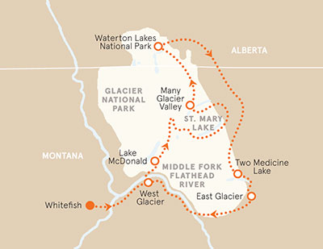
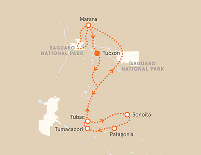

The Montana Tour (Canadá)
The relief of the state is diverse. 60% of the territory is a large meadow, while the central-west region is covered by the Rocky Mountains; thus its name is explained, derived from the Spanish word "mountain". Montana also has many rivers, ideal for trout fishing.
Length
You raft down the Middle Fork of the Flathead River with experienced river runners.
Support
We work team will be with you during all tour.
Prices
From $3,099 - $3,298 pp dbl. occ. 6 days / 5 nights
Arizona Bike Tour
Journey to the rolling grasslands of Sonoita, Arizona's wine country, at an altitude of 5,000 feet | Bike the scenic road around vineyard alley to Italian-inspired Kief-Joshua Estates for an exclusive tasting | There's an eclectic vibe in Patagonia, a former mining and railroad town | Spin along quiet riverside roads past adobe houses and ranches.
Length
Pedal in the high desert, perhaps spotting javelinas, jackrabbits or roadrunners
Support
Our tourism guide will always be in all tour.
Prices
From $2,698 - $2,999 pp dbl. occ. 5 days / 4 nights
